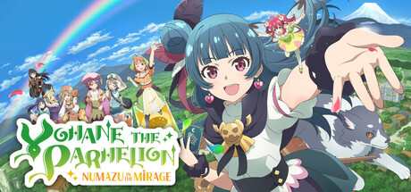

Yohane the Parhelion
- NUMAZU in the MIRAGE -
เวอร์ชันทดลอง
🤖 แปลด้วย AI
- แปลครบทั้งเกม ทั้งเนื้อเรื่อง เมนู การ์ด ไอเทม ศัตรู ชุด และคำขอ
- ตัวหนังสือไทยแสดงสวย สระกับวรรณยุกต์ไม่ลอย
- ไม่ยุ่งกับเซฟเกม ลบม็อดออกเมื่อไหร่ก็เล่นต่อได้ปกติ
วิธีติดตั้ง (ประมาณ 5 นาที)
- กดปุ่ม ดาวน์โหลด ด้านบน จะได้ไฟล์ zip มา 1 ไฟล์
- เปิดโฟลเดอร์เกม: เข้า Steam แล้ว คลิกขวาที่ชื่อเกม → จัดการ → เรียกดูไฟล์ในเครื่อง
จะมีโฟลเดอร์เด้งขึ้นมา ข้างในมีไฟล์
yohanuma.exe - ดับเบิลคลิกเปิดไฟล์ zip ที่โหลดมา → กด Ctrl + A เพื่อเลือกทั้งหมด → ลากไปวางในโฟลเดอร์เกม ถ้าขึ้นถามว่าจะแทนที่ไฟล์ไหม ให้กด แทนที่
- เช็กให้ชัวร์: ในโฟลเดอร์เกมต้องเห็นโฟลเดอร์
BepInExกับไฟล์winhttp.dllอยู่ข้าง ๆyohanuma.exe(ถ้ามันไปอยู่ในโฟลเดอร์ย่อยอีกชั้น ให้ย้ายออกมาไว้ข้าง ๆyohanuma.exe) - เข้าเกมผ่าน Steam ตามปกติ ครั้งแรกจะเปิดช้าประมาณ 1–3 นาที รอได้เลย ไม่ได้ค้าง (ต้องต่อเน็ตด้วย)
- ในเกม ไปที่การตั้งค่า แล้วตั้งภาษาเป็น English ข้อความจะกลายเป็นภาษาไทย 🎉
อยากเอาม็อดออก: ดับเบิลคลิกไฟล์ YohanumaThai_uninstall.bat ในโฟลเดอร์เกม